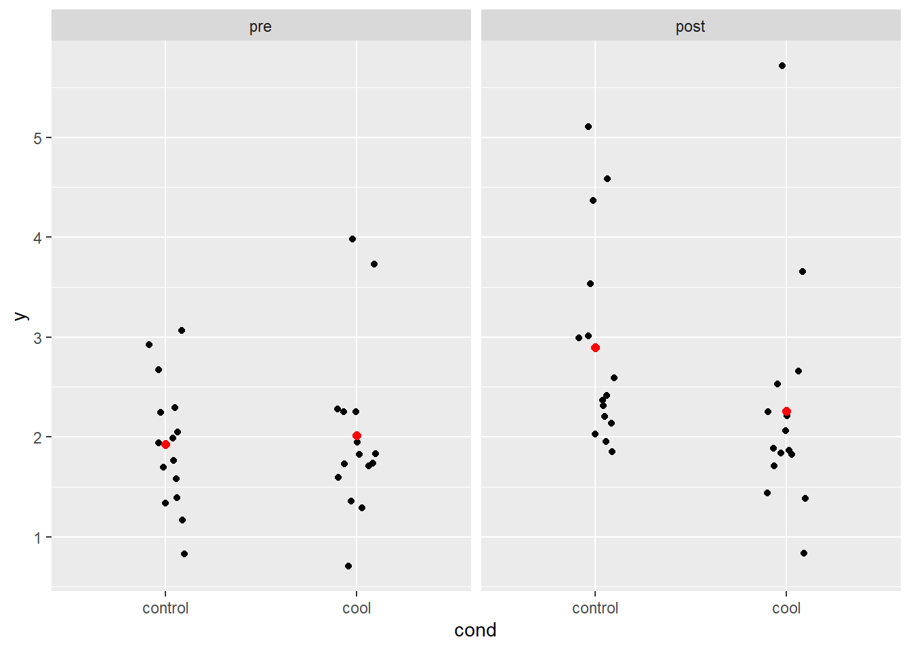
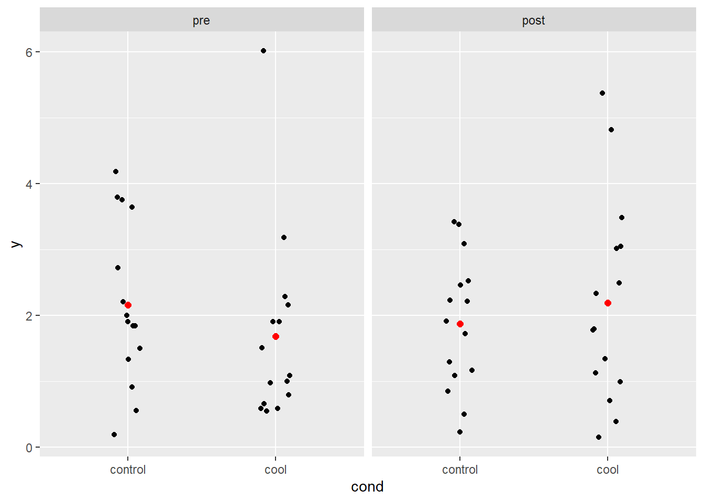
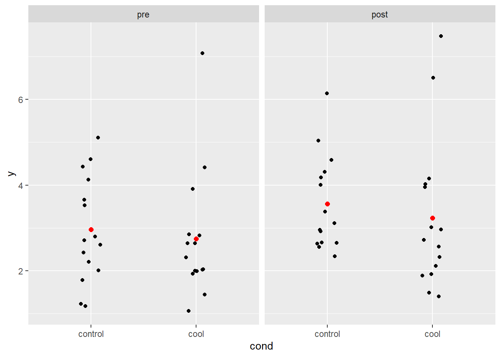
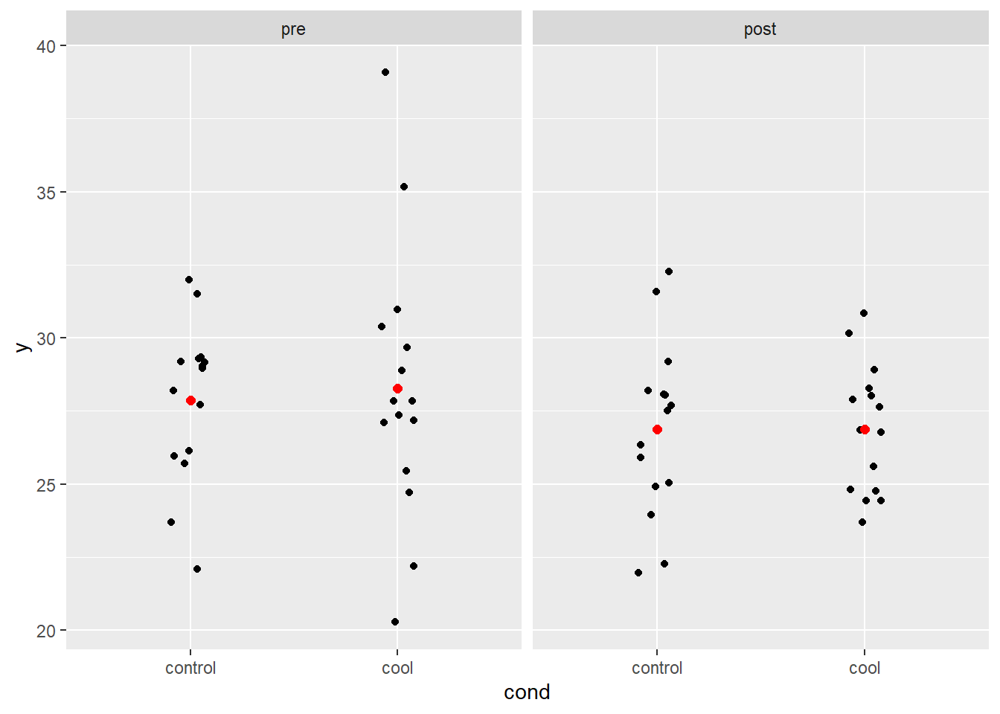
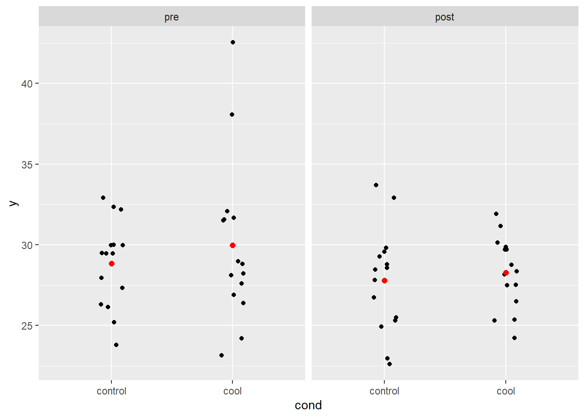
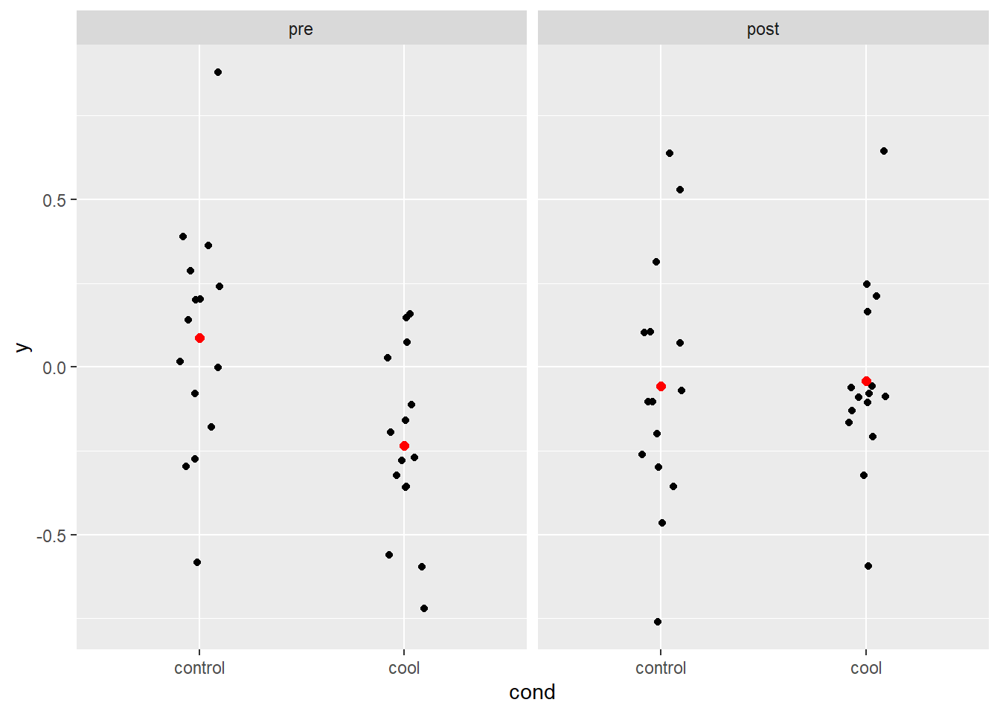
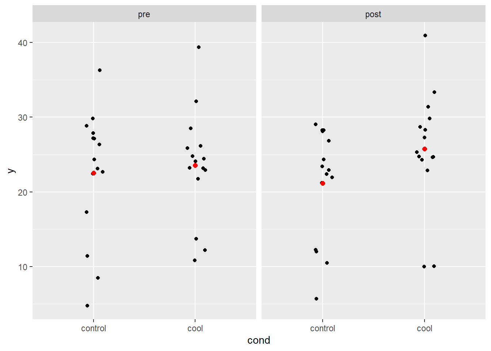

| var_name | time | condition | id | trial |
|---|---|---|---|---|
| resultado_chute_part14_pos_gelo_t2 | post | TRT | part14 | t_2 |
| resultado_chute_part6_pos_RSA_gelo_t3 | inter | TRT | part6 | t_3 |
| resultado_chute_part3_pos_gelo_t3 | post | TRT | part3 | t_3 |
| resultado_chute_part6_pos_RSA_controle_t1 | inter | CON | part6 | t_1 |
| resultado_chute_part9_pos_controle_t3 | post | CON | part9 | t_3 |
A comment on: “Recovery of kicking kinematics and performance following repeated high-intensity running bouts in the heat: Can a rapid local cooling intervention help young soccer players?”
Robert Rein
r.rein@dshs-koeln.de
Institue of Training Science and Sports Informatics
German Sport University Cologne
r.rein@dshs-koeln.de
Institue of Training Science and Sports Informatics
German Sport University Cologne
Abstract
Palucci Vieira et al. (2023) investigates whether an acute cooling intervention of the thigh of the dominant kicking-leg following a fatiguing repeated high-intensity running protocol (RHIP) in a group U17 male (N = 15) developmental players (\(16\pm 1\)yrs) improves kicking performance compared to a control condition without cooling. Two experiments were performed. The first experiment served as a manipulation check to ensure that the chosen RHIP was appropriate to trigger the desired fatigue. The second experiment was used a randomized cross-over pre-post experimental design where each participant served as their own control. The authors used a number of end-points including subjective measurements including for example rate of perceived exertion (RPE) and pain, performance measures of the ball including velocity and kicking accuracy, and leg kinematics including joints angles and segment velocities. The results from Experiment 1 showed that the RHIP led to the expected detriments in performance and increases in subjective measures of exertion. The results from Experiment 2 showed a number of differences between the conditions. The main claim of the experiment is, that a brief cooling intervention of five minutes after a fatiguing sprint protocol is effective to restore kicking related precision and velocity parameters. However, given the specification given by the paper these claims do not hold, as the no significant interactions effects were found for this endpoints.
1. Introduction
The data used by Palucci Vieira et al. (2023) was collected in two field experiments (p. 431: Two experiments were conducted to test the study hypothesis […]). Experiment 1 was a manipulation check study which included \(13\) of the \(15\) players used in Experiment 2 which investigated whether the chosen sprinting protocol was sufficient to trigger the needed fatigue effects on shooting precision. Experiment 2 was the main experiment of the study and is relevant with respect for the main scientific claims of the paper.
Sample
In both experiments the same sample of \(N = 15\) U17 male football players were used but in Experiment 1 only \(13\) of the \(15\) players were included.
Endpoints
Kicks were performed at maximum velocity aimed at a target at the centre of a football goal from a distance of \(18\)m. Ball and body kinematics at ball impact were determined from two synchronized GoPro Cameras placed at an angle of \(90^o\) (resolution \(1280\times960\)px) running at \(240\)Hz. OpenPose was used to determine seven body keypoint positions (reported system error of \(3.49\)cm) and subsequently converted into 3D coordinates using DLT. From these coordinates the dependent segment kinematics were derived.
Ball displacements were hand tracked from the video recordings. Kicking accuracy measurements were determined from two additional GoPro Cameras (resolution \(1920\times1080\)px) running at \(60\)Hz using hand tracking. The dependent kicking accuracy measures mean radial error (MRE), bivariate radial error (BVE) and accuracy were calculated using the following formulas:
\[ \begin{aligned} \text{MRE} &= \frac{1}{N}\sum_{i=1}^N \sqrt{(x_{\text{target}}-x_{\text{ball}})^2+(y_{\text{target}}-y_{\text{ball}})^2} \\ \text{BVE} &= \sqrt{\text{SD}_x^2 + \text{SD}_y^2} \\ \text{accuracy}&=\sqrt{\text{MRE}^2 + \text{BVE}^2} \end{aligned} \]
This results in a total of 16 endpoints (compare Table 1) which were collected in both experiments. In Experiment 1 before and after the repeated high-intensity running protocol, in Experiment 2 before and after RHIP + treatment.
| No | Measure | Data collection type |
|---|---|---|
| 1 | RPE - Rate of perceived exertion | Questionnaire: Borg scale (0-10) |
| 2 | Pain | Questionnaire: Likert scale (0-10) |
| 3 | Recovery | Questionnaire: Likert scale (0-10) |
| 4 | Thigh temperature | Infrared thermometer |
| 5 | Mean radial error | Determined from video recordings |
| 6 | Bivariate radial error | Determined from video recordings |
| 7 | Accuracy | Determined from video recordings |
| 8 | Peak ball speed | Determined from video recordings |
| 9 | \(\text{CM}_{\text{foot}}\) Velocity | OpenPose from video recordings |
| 10 | \(\text{CM}_{\text{foot}}\) to knee relative Velocity | OpenPose from video recordings |
| 11 | Non-preferred hip velocity | OpenPose from video recordings |
| 12 | Peak knee angular velocity | OpenPose from video recordings |
| 13 | ROM hip | OpenPose from video recordings |
| 14 | ROM knee | OpenPose from video recordings |
| 15 | Plantarflexion at impact | OpenPose from video recordings |
| 16 | Eversion angle at impact | OpenPose from video recordings |
In addition the reliability of the high-intensity running protocol was assessed based on the running times of the ten 30m sprints using several different duration measurements endpoints (compare Table 2).
| No | Measure | Data collection type |
|---|---|---|
| 16 | Mean Time | Manual recording |
| 17 | Worst Time | Manual recording |
| 18 | Best Time | Manual recording |
| 19 | Total Time | Manual recording |
| 20 | Percentage of velocity decay Time | Manual recording |
No ranking of endpoints was reported.
Statistical analysis
Statistical analysis for the pre-post measurements in Experiment 1 used either a dependent t-Test or a non-parametric Wilcoxon signed-rank, depending on whether a preceding Shapiro-Wilk test flagged deviations from a non-normal distribution, for raw data value or after log-transforming raw data values. Effect sizes were calculated either as Cohen’s D or \(r = z\sqrt{N}\) accordingly.
In Experiment 2, reliability measures were analyzed using Intraclass correlation coefficient (ICC), t-Tests, typical error, and coefficient of variation. For the ICC the exact type was not specified and no definition for typical error was given. Differential changes from pre- to post-measurements between conditions were assessed using 2 x 2 Repeated measures ANOVA and partial \(\eta^2\) was used as an effect size measurement. Post-hoc tests were Bonferroni adjustment and no pre-set number of tests was given for the Bonferroni adjustment. Alternatively Friedman-tests were performed, which is usually used as an alternative for a one-way repeated-measures ANOVA as it neglects the 2x2 structure. No criteria was given which decided which test to use.
All statistical analyses were reported to had been performed using the IBM Statistical Package for the Social Sciences v.25. The significance level p was set to \(p = 0.05\) and no adjustments for the number of tests across the endpoints was used.
Data sources
The authors provided MatLab- and Excel files which can be downloaded from a public OSF repository (osf.io/bd8zv). Two MatLab files appear to contain the raw data derived from the video recordings analysed using the OpenPose-DLT pipeline and the tracking data from the ball. The file data_2Dkinematics.mat contained the raw data for the ball kinematics, whereas data_3Dkinematics.mat contained the raw data for segments kinematics. The Excel-Files contained analysis data (compare Table 3).
| File | Endpoints |
|---|---|
| raw_ball_velocity | 8 |
| raw_data_accuracy | 5-7 |
| raw_lower_limb_factors | 9-16 |
| raw_perceptual_measures | 1-3 |
| raw_RSA_running_protocol | 17-20 |
No code book nor analysis scripts were provided, thus all reproducibility procedures including data processing had to be hand-coded.
Computational reproducibility
The authors implemented their analysis using SPSS v25 whereas the reproducibility testing reconstructed the analyses independently using the R statistical environment. The analyses were executed according to the descriptions in the article. As neither SPSS nor Excel directly work on MatLab-Files there have to analysis scripts which transform the data into the according file formats. However, these were not available in the data repository. Accordingly, the article is not computationally reproducible from the deposited analysis data, since the package does not contain the code required to reproduce all of the published estimates. This classification reflects the incompleteness of the files rather than a demonstrated failure of the original code. In summary, the results from the published paper were partially reproducible from the data provided (see individual sections) and compare Table 4.
| Type | Fully | Partial | No |
|---|---|---|---|
| Raw data provided | X | ||
| Cleaning code provided | X | ||
| Analysis data provided | X | ||
| Analysis code provided | X | ||
| Reproducible from raw data | X | ||
| Reproducible from analysis data | X |
Computational reproducibility of analysis data
First, the data from the analysis data contained in the Excel-files was tried to be reproduced.
DISCLAIMER: All scripts used for the computational reproducibility assessment were written by myself. The Claude Code Opus 5.5 model was used to generate only formatting helpers to structure the output. The scripts can be downloaded from github.com/robertreingit/I4R_Reproduction_2026.
Reproducibility was only performed for \(CM_{\text{foot}}\)-Velocity, ROM hip, ROM knee, Non-preferred hip velocity, Peak knee velocity data. As calculation of the joint-angle data was not possible. In particular, the calculation of the inversion-eversion angle requires the estimation of the foot plane which is not possible given the seven body landmarks provided in the file. Further, the MatLab-file contained joint angles which apparently followed an Euler-angle conventions. However, given that not enough landmarks were provided per segment it was not possible to calculate local coordinate system required for Euler angles. A marker named COM-foot was contained in the markerset providing data about the center of mass of the foot. However, from the documentation in the manuscript it is not clear how the COM of the foot can be derived from the data given. The references given in the method section were also not helpful in this regard and did not provide sufficient information to reproduce the values.
No trials
From the naming convention of the variables in the data_3Dkinematics.mat the testing trials were derived.
It appears that only data from Experiment 2 was contained in the file. But this could not be conclusively confirmed. Based on the naming convention it appears that three testing sessions per participants were performed. The convention pre, inter, post was used for pre_gelo, pos_RSA_gelo and post_gelo respectively. However, only two measurement time points were reported in the publication for the ball and segment measurements (pre and post). It also seems that not all trials from all participants are contained in the data (compare Table 6). Whether the data is missing completely or just was not stored in the MatLab-File could not be determined. The manuscript does not report any data points.
| condition | time | part1 | part2 | part3 | part4 | part5 | part6 | part7 | part8 | part9 | part10 | part11 | part12 | part13 | part14 | part15 |
|---|---|---|---|---|---|---|---|---|---|---|---|---|---|---|---|---|
| CON | inter | 3 | 3 | 3 | 3 | 2 | 3 | 3 | 3 | 3 | 3 | 3 | 3 | 3 | 3 | 3 |
| CON | post | 3 | 3 | 3 | 3 | 3 | 3 | 3 | 3 | 3 | 3 | 3 | 3 | 3 | 3 | 3 |
| TRT | inter | 3 | 3 | 3 | 3 | 3 | 3 | 3 | 3 | 3 | 3 | NA | 3 | 3 | 3 | 3 |
| TRT | post | 3 | 3 | 3 | 3 | 3 | 3 | 3 | 3 | 3 | 3 | 3 | 3 | 3 | 3 | 3 |
| TRT | pre | 3 | 3 | 3 | 3 | 3 | 3 | 3 | 3 | 3 | 3 | 3 | 3 | 3 | NA | NA |
| CON | pre | NA | NA | NA | NA | NA | NA | NA | NA | NA | NA | NA | NA | NA | 3 | 3 |
With respect to the data from Experiment 1, for several of the endpoints the values of individual trials and the average for the Pre and Post testing session matched the average values from Experiment 2 to values across both conditions. For example for the average ball velocity from file: raw_data_accuracy.xlsx for participant 1 for the PRE timepoint for Experiment 1 the following values were obtained:
| Variable | Experiment | Value |
|---|---|---|
| Part1 - Attempt1 - PRE CONTROL | 2 | 0.9501561 |
| Part1 - Attempt1 - PRE COOL | 2 | 1.5828397 |
| Part1 - Attempt1 - PRE | 1 | 1.2664979 |
| Average across Experiment 2 | - | 1.2664979 |
Similar matches were found for BVE, ACUR, \(CM_{\text{foot}}\)-Velocity and also in the raw data MatLab-Files.
\(CM_{\text{foot}}\)-Velocity
During extract of the according data from data_3Dkinematics.mat it appeared that for values of \(CM_{\text{foot}}\)-Velocity was either erroneously labeled in the dataset or the wrong variable was extracted. As the analysis values contained in raw_lower_limb_factors.xls did not match with the according data in the MatLab-File. However, a partial match was found with the values stored under the entry 5 metatarso in the MatLab-File which is likely the value for the 5th metatarsal. In Table 8 are the extracted metatarsal values from the MatLab-file and in Table 9 the values for CMfoot velocity are shown.
| id | t_1 | t_2 | t_3 |
|---|---|---|---|
| part1 | 24.439849 | 25.968190 | 23.757274 |
| part2 | 24.530649 | 24.911664 | 23.495711 |
| part3 | 29.392224 | 27.927006 | 24.506176 |
| part4 | 24.802079 | 26.202907 | 23.094687 |
| part5 | 21.974236 | 24.505189 | 22.141689 |
| part6 | 44.910177 | 46.134248 | 31.669511 |
| part7 | 21.476499 | 24.696292 | 65.092215 |
| part8 | 13.937029 | 13.043414 | 5.498284 |
| part9 | 24.996940 | 30.755620 | 30.330911 |
| part10 | 24.850475 | 28.421064 | 46.738406 |
| part11 | 4.168095 | 10.606582 | 2.273692 |
| part12 | 24.737643 | 26.325803 | 24.906696 |
| part13 | 28.221719 | 34.376303 | 26.922194 |
| part14 | 24.216580 | 26.229889 | 23.414440 |
| part15 | 1.640050 | 2.723203 | 1.720044 |
| id | t_1 | t_2 | t_3 |
|---|---|---|---|
| part1 | 24.439849 | 25.96819 | 23.757274 |
| part2 | 24.530649 | 24.91166 | 23.495711 |
| part3 | 29.392224 | 27.92701 | 24.506176 |
| part4 | 24.802079 | 26.20291 | 23.094687 |
| part5 | 21.974236 | 24.50519 | 22.141689 |
| part6 | 44.910177 | 46.13425 | 31.669511 |
| part7 | 7.349920 | 28.74929 | 58.022166 |
| part8 | 23.653467 | 33.90883 | 27.332674 |
| part9 | 24.996940 | 30.75562 | 30.330911 |
| part10 | 24.850475 | 28.42106 | 46.738406 |
| part11 | 5.659752 | 12.28947 | 12.255356 |
| part12 | 24.737643 | 26.32580 | 24.906696 |
| part13 | 28.221719 | 34.37630 | 26.922194 |
| part14 | 24.216580 | 26.22989 | 23.414440 |
| part15 | 9.798786 | 10.57383 | 9.654413 |
However, not all values line up.
As not all trials were present in the dataset no exact matching testing could be performed. However, for those values where data from all participants was available the values for peak hip velocity for TRT for both time points was reproduced. The same was found for variables ROM_hip and ROM_knee.
# Checking datasets
check_mat <- function(m1, m2, prec = 0.001) (abs(m1 - m2) < prec) |> all()
# peak hip velocity
m1 <- get_id_mat(peak_hip_vel)
m2 <- read_xlsx(
LIMB_FILE, 'Ndom_hip_peak_Vel', 'B28:D40', col_names=paste0('t',1:3)) |>
as.matrix()
check_mat(m1, m2)[1] TRUEm1 <- get_id_mat(peak_hip_vel, tm = 'post')
m2 <- read_xlsx(
LIMB_FILE, 'Ndom_hip_peak_Vel', 'G28:I42', col_names=paste0('t',1:3)) |>
as.matrix()
check_mat(m1, m2)[1] TRUE# rom hip
m1 <- get_id_mat(rom_hip, tm = 'post', cdt = 'TRT')
m2 <- read_xlsx(
LIMB_FILE, 'ROM_hip', 'G28:I42', col_names=paste0('t',1:3)) |> as.matrix()
check_mat(m1, m2)[1] TRUE# rom knee
m1 <- get_id_mat(rom_knee, tm = 'post', cdt = 'TRT')
m2 <- read_xlsx(
LIMB_FILE, 'ROM_knee', 'G28:I42', col_names=paste0('t',1:3)) |> as.matrix()
check_mat(m1, m2)[1] TRUEComputational reproducibility of documented results
Experiment 1
For the computational reproducibility for the results from Table 1 of the manuscript was reproduced from the analysis data. Only averages, standard deviations, the test-statistic, and the p-values were sought to be reproduced. The effect sizes were not reproduced.
Reproduction of Table 1
RPE
For the RPE measurement qualitative reproducibility was achieved.
measure given computed diff match
pre_bar 0.770 0.770 0.000 TRUE
pre_sd 1.170 1.170 0.000 TRUE
post_bar 5.850 5.850 0.000 TRUE
post_sd 2.540 2.540 0.000 TRUE
p_value 0.006 0.002 0.004 FALSE
95% CI: [-7.000, -3.500]Pain
For the PAIN measurement reproducibility was complete.
measure given computed diff match
pre_bar 1.310 1.310 0.000 TRUE
pre_sd 0.480 0.480 0.000 TRUE
post_bar 1.540 1.540 0.000 TRUE
post_sd 0.780 0.780 0.000 TRUE
p_value 0.337 0.337 0.000 TRUE
95% CI: [-0.734, 0.272]Recovery
For the Recovery measurement reproducibility was complete.
measure given computed diff match
pre_bar 8.920 8.920 0.000 TRUE
pre_sd 1.850 1.850 0.000 TRUE
post_bar 5.310 5.310 0.000 TRUE
post_sd 1.890 1.890 0.000 TRUE
p_value 0.002 0.002 0.000 TRUE
95% CI: [1.664, 5.566]Thigh Temperature
For the thigh temperature qualitative reproducibility was achieved.
measure given computed diff match
pre_bar 35.880 35.880 0.000 TRUE
pre_sd 0.730 0.730 0.000 TRUE
post_bar 36.220 36.220 0.000 TRUE
post_sd 0.340 0.340 0.000 TRUE
p_value 0.066 0.064 0.002 FALSE
95% CI: [-0.708, 0.023]Mean radial error
For the mean radial error the reproducibility was complete.
measure given computed diff match
pre_bar 1.920 1.920 0.000 TRUE
pre_sd 0.420 0.420 0.000 TRUE
post_bar 2.590 2.590 0.000 TRUE
post_sd 0.670 0.670 0.000 TRUE
p_value 0.025 0.025 0.000 TRUE
95% CI: [-1.247, -0.101]Mean Bivariate Variable error
For BVE reproducibility was complete.
measure given computed diff match
pre_bar 1.860 1.860 0.000 TRUE
pre_sd 0.590 0.590 0.000 TRUE
post_bar 1.790 1.790 0.000 TRUE
post_sd 0.950 0.950 0.000 TRUE
p_value 0.764 0.764 0.000 TRUE
95% CI: [-0.467, 0.620]Accuracy
For Accuracy the results were reproduced but a reporting error was detected.
measure given computed diff match
pre_bar 2.760 2.760 0.000 TRUE
pre_sd 0.510 0.510 0.000 TRUE
post_bar 3.260 3.260 0.000 TRUE
post_sd 1.100 1.010 0.090 FALSE
p_value 0.113 0.113 0.000 TRUE
95% CI: [-1.139, 0.138]Average ball speed
For average ball speed, a reporting error was detected but reproducibility was complete.
measure given computed diff match
pre_bar 28.700 28.700 0.000 TRUE
pre_sd 2.300 2.300 0.000 TRUE
post_bar 27.800 27.800 0.000 TRUE
post_sd 1.190 1.910 0.720 FALSE
p_value 0.038 0.038 0.000 TRUE
95% CI: [0.060, 1.730]Peak ball speed
Complete.
measure given computed diff match
pre_bar 29.680 29.680 0.000 TRUE
pre_sd 2.640 2.640 0.000 TRUE
post_bar 28.510 28.510 0.000 TRUE
post_sd 2.050 2.050 0.000 TRUE
p_value 0.029 0.029 0.000 TRUE
95% CI: [0.143, 2.206]CM_foot velocity
Qualitatively reproduced.
measure given computed diff match
pre_bar 23.880 23.880 0.000 TRUE
pre_sd 6.550 6.550 0.000 TRUE
post_bar 24.390 24.390 0.000 TRUE
post_sd 8.270 8.270 0.000 TRUE
p_value 0.224 0.655 0.431 FALSE
95% CI: [-2.978, 1.943]measure given computed diff match
pre_bar 23.880 23.880 0.000 TRUE
pre_sd 6.550 6.550 0.000 TRUE
post_bar 24.390 24.390 0.000 TRUE
post_sd 8.270 8.270 0.000 TRUE
p_value 0.224 0.737 0.513 FALSE
95% CI: [-0.100, 0.137]measure given computed diff match
pre_bar 23.880 23.880 0.000 TRUE
pre_sd 6.550 6.550 0.000 TRUE
post_bar 24.390 24.390 0.000 TRUE
post_sd 8.270 8.270 0.000 TRUE
p_value 0.224 0.735 0.511 FALSE
95% CI: [-1.468, 1.600]For the remaining tests in Table 1, the data was missing.
Experiment 2
In Experiment 2, not all tests were assessed for reproducibility.
Running protocol reliability
For the reliability of the running protocol, reproducibility of parts of Table 2 was investigated, excluding the typical error TE and the coefficient of variation CV.
MT (s)
Qualitatively reproduced.
measure given computed diff match
con mean 5.017 5.020 0.003 TRUE
con sd 0.406 0.410 0.004 TRUE
cool mean 4.939 4.940 0.001 TRUE
cool sd 0.382 0.390 0.008 TRUE
t-test t 1.458 1.456 0.002 TRUE
t-test p 0.167 0.170 0.003 FALSE
ICC 0.863 0.880 0.017 FALSEWorst time - WT
Qualitatively reproduced.
measure given computed diff match
con mean 5.350 5.350 0.000 TRUE
con sd 0.454 0.450 0.004 TRUE
cool mean 5.284 5.280 0.004 TRUE
cool sd 0.425 0.420 0.005 TRUE
t-test t 73.500 0.796 72.704 FALSE
t-test p 0.460 0.430 0.030 FALSE
ICC 0.719 0.740 0.021 FALSEBest time - BT
Qualitatively reproduced.
measure given computed diff match
con mean 4.671 4.670 0.001 TRUE
con sd 0.345 0.350 0.005 TRUE
cool mean 4.535 4.530 0.005 TRUE
cool sd 0.380 0.380 0.000 TRUE
t-test t 1.410 1.410 0.000 TRUE
t-test p 0.180 0.180 0.000 TRUE
ICC 0.466 0.500 0.034 FALSETotal time - TT
Qualitatively reproduced.
measure given computed diff match
con mean 50.168 50.170 0.002 TRUE
con sd 4.059 4.060 0.001 TRUE
cool mean 49.391 49.390 0.001 TRUE
cool sd 3.815 3.820 0.005 TRUE
t-test t 1.458 1.458 0.000 TRUE
t-test p 0.167 0.170 0.003 FALSE
ICC 0.863 0.880 0.017 FALSEPercentage of velocity decay - DEC
Could not be reproduced as it was not clear how it was calculated.
measure given computed diff match
con mean -4.273 12.530 16.803 FALSE
con sd 7.698 4.640 3.058 FALSE
cool mean -2.133 14.090 16.223 FALSE
cool sd 7.915 4.480 3.435 FALSE
t-test t 0.844 -0.887 1.731 FALSE
t-test p 0.413 0.390 0.023 FALSE
ICC 0.218 -0.430 0.648 FALSERecovery treatment effects
Paragraph 1
The results for the RPE measurements were reproduced.
measure computed given diff match
chi 13.408 13.408 0.000 TRUE
p 0.004 0.004 0.000 TRUE
W 0.298 0.300 0.002 TRUE
df 3.000 3.000 0.000 TRUEPost-hoc control pre-post
Qualitatively reproduced.
measure computed given diff match
med 1.000 1.000 0.000 TRUE
p 0.007 0.020 0.013 FALSE
r 0.692 0.690 0.002 TRUE
IQR low 0.000 0.000 0.000 TRUE
IQR up 2.500 3.000 0.500 FALSEPost-hoc cool pre-post
Qualitatively reproduced.
measure computed given diff match
med 0.000 0.000 0.000 TRUE
p 0.176 1.000 0.824 FALSE
r 0.350 0.340 0.010 TRUE
IQR low 0.000 0.000 0.000 TRUE
IQR up 1.500 2.000 0.500 FALSEThigh Temperature
The test for the thigh temperature was reproduced.
measure computed given diff match
chi 25.711 25.711 0.000 TRUE
p 0.000 0.001 0.001 TRUE
W 0.571 0.570 0.001 TRUE
df 3.000 3.000 0.000 TRUEPost-hoc cool pre-post
Qualitatively reproduced.
measure computed given diff match
med 3.300 3.300 0.000 TRUE
p 0.001 0.001 0.000 TRUE
r 0.881 0.880 0.001 TRUE
IQR low 2.450 2.400 0.050 FALSE
IQR up 4.000 4.000 0.000 TRUEPost-hoc cool-control post
Qualitatively reproduced.
measure computed given diff match
med 3.200 3.200 0.000 TRUE
p 0.001 0.002 0.001 FALSE
r 0.880 0.880 0.000 TRUE
IQR low 2.100 2.000 0.100 FALSE
IQR up 3.650 3.700 0.050 FALSEPerceived recovery
Reproduced.
measure computed given diff match
chi 11.057 11.057 0.000 TRUE
p 0.011 0.011 0.000 TRUE
W 0.246 0.250 0.004 TRUE
df 3.000 3.000 0.000 TRUEPain
Qualitatively reproduced.
measure computed given diff match
chi 0.833 0.000 0.833 FALSE
p 0.841 0.830 0.011 FALSE
W 0.019 0.020 0.001 TRUE
df 3.000 3.000 0.000 TRUEParagraph 2
Mean Radial Error
Reproduced.
measure computed given diff match
F 4.286 4.286 0.000 TRUE
p 0.057 0.057 0.000 TRUE
eta 0.234 0.234 0.000 TRUE
df1 1.000 1.000 0.000 TRUE
df2 14.000 14.000 0.000 TRUE
CON wthn d 0.967 0.970 0.003 TRUE
CON wthn p 0.003 0.003 0.000 TRUE
COOL wthn d 0.244 0.240 0.004 TRUE
COOL wthn p 0.449 0.450 0.001 TRUE
Bivariate variable error
Not reproduced.
measure computed given diff match
p 0.203 0.160 0.043 FALSE
eta 0.113 0.050 0.063 FALSE
Accuracy
Not reproduced as Pre control doesn’t match.
measure computed given diff match
p 0.855 0.160 0.695 FALSE
eta 0.002 0.050 0.048 FALSE
In the graph there seems to be a mislabeling of cool values.
Ball speed average
Reproduced.
measure computed given diff match
F 0.124 0.125 0.001 TRUE
p 0.729 0.730 0.001 TRUE
eta 0.009 0.009 0.000 TRUE
df1 1.000 1.000 0.000 TRUE
df2 14.000 14.000 0.000 TRUE
CON wthn d -1.006 -1.010 0.004 TRUE
CON wthn p 0.038 0.040 0.002 TRUE
COOL wthn d -1.397 -1.400 0.003 TRUE
COOL wthn p 0.153 0.150 0.003 TRUE
Ball peak
Reproduced.
measure computed given diff match
F 0.396 0.394 0.002 TRUE
p 0.539 0.540 0.001 TRUE
eta 0.028 0.027 0.001 TRUE
df1 1.000 1.000 0.000 TRUE
df2 14.000 14.000 0.000 TRUE
CON wthn d -1.037 -1.040 0.003 TRUE
CON wthn p 0.021 0.020 0.001 TRUE
COOL wthn d -1.706 -1.700 0.006 TRUE
COOL wthn p 0.107 0.110 0.003 TRUE
Paragraph 3
Ankle eversion
Qualitatively reproduced.
measure computed given diff match
F 5.376 5.339 0.037 FALSE
p 0.036 0.040 0.004 FALSE
eta 0.277 0.276 0.001 TRUE
df1 1.000 1.000 0.000 TRUE
df2 14.000 14.000 0.000 TRUE
CON wthn d 0.019 0.020 0.001 TRUE
COOL wthn p 0.908 0.910 0.002 TRUE
CMfoot velocity
Reproduced.
measure computed given diff match
F 6.544 6.538 0.006 TRUE
p 0.023 0.020 0.003 FALSE
eta 0.319 0.318 0.001 TRUE
COOL wthn p 0.044 0.040 0.004 TRUE
The foot velocities for some participants appear to be unrealistically high.
Claims
Only claims were checked with respect to main outcomes of Experiment 2.
Ball placement recovers after cooling compared to control
| Position | Claim |
|---|---|
| p. 430 | MRE increased only post-control (p = 0.057; eta2 = 0.234) |
| p. 434 | Time x Condition: F(1, 14) = 4.286, p = 0.057, eta2 = 0.234 |
| p. 434 | Control Pre vs Post: 0.97 m [0.40, 1.54], p = 0.003, d = −1.12. COOL Pre vs Post: 0.24 m [−0.43, 0.91], p = 0.45, d = −0.25 |
| p. 435 | BVE and accuracy: no interaction (p > 0.16; eta2 < 0.05) |
| p. 437 | COOL promoted benefits […] in ball placement |
| p. 437 | COOL helped reduce deleterious effects […] including ball placement |
| p. 438 | Cooling effective “especially concerning ball placement” |
| p. 438 | Ice packs favoured recovery of “notably ball placement” |
This claim is one of the main claims of the paper. However, given the results with no significant interaction effects between time and condition no post-hoc testing was actually warranted and here no statistically significant differences between conditions for post were found. Thus, the conclusion based on the results is not warranted.
Ball speed significant declines after control but after cooling
| Position | Claim |
|---|---|
| p. 430 | Significant small declines post-control (p < 0.05; d = 0.35) |
| p. 435 | No Time x Condition: average F(1, 14) = 0.126, p = 0.73, eta2 = 0.009 |
| p. 435 | No Time x Condition: peak F(1, 14) = 0.394, p = 0.54, eta2 = 0.027 |
| p. 437 | COOL promoted benefits in […] velocity indicators |
| p. 437 | COOL helped reduce ball speed declines as observed in the passive resting condition |
| p. 438 | Ice packs […] helped favoured recovery “to a lesser extent velocity” |
The mean declines in COOL (−1.40 and −1.70 m/s) are numerically larger than in Control (−1.01 and −1.04 m/s), and there is no statistically significant interaction effect (p = 0.73 and 0.54). The claims of a cooling benefit for ball speed rest only on the COOL declines not reaching significance. No statistically significant differences were found for the post time point which would warrant this claim. Thus, this claim is not warranted.
Foot velocity (\(CM_{\text{foot}}\)) was faster after cooling than after control
| Position | Claim |
|---|---|
| p. 430 | Post-intervention foot center-of-mass velocity was moderately faster in cooling (p = 0.04; d = 0.60) |
| p. 436 | Time x Condition: F(1, 14) = 6.538, p = 0.02, eta2 = 0.318. COOL vs Control at Post: 4.61 m/s [0.14, 9.08], p = 0.04, d = 0.60 |
| p. 437 | COOL promoted benefits in kinematics (CMfoot) |
| p. 437 | COOL helped reduce deleterious effects on CMfoot |
| p. 437 | Ergogenic effects of COOL on foot and ball kinematics |
In Experiment 1, \(CM_{\text{foot}}\) velocity did not decline after the repeated sprint protocol. Accordingly, the description of a “deleterious effect” on \(CM_{\text{foot}}\) under the control condition is not shown by a reported pre-post test. Thus, the support for this claim is not clear.
Further comments
The paper states a registry entry in the Brazilian Clinical Trial Registry under RBR-8prx2m, however the described study does not match the study reported in the paper.
The power analysis for the cooling effects with respect to precision refers to a study investigating throwing accuracy (Wassinger et al. 2007), where cooling was applied to the shoulder for 20 minutes in a rested state which is quite different from the methodological approach used in Palucci Vieira et al. (2023). The second source, the meta-analysis by Bleakley et al. (2012), refers to the same study.
If indeed the tests were also performed after the sprint-protocol before the intervention, it is not clear why this data was not used in the analysis of Experiment 2. Given that the main aim of the study was to investigate the effect of cooling, a more appropriate comparison would be the difference between the post-sprint test and the post-treatment test results. Comparing pre-sprint with post-treatment can exclude that observed differences were the result of different responses to the sprint-protocol or the result of the intervention. Since no reliability testing was done on the sprint protocol the reliability of the sprint times is not really helpful in this regard.
Given the number of participants in relation to the number of statistical tests, the lack of any modification of the significance threshold for the different endpoints appears somewhat problematic.
From the MatLab-files it appears that a number of additional endpoints were calculated (data_3Dkinematics.mat: cell deterministic results contains 30 variable entries) which were not mentioned in the paper and it is not clear based on which criteria variables were selected for inclusion in the analysis.
Conclusion
Given the results as stated in the paper, the main claims of the paper do not hold and from the results it cannot be concluded that a rapid cooling intervention serves to recover kicking kinematics and performance. Further, given the limited sample size of \(N = 15\) any generalization to other populations, irrespective of the results, is also not warranted.
Computational environment
R version 4.3.2 (2023-10-31 ucrt)
Platform: x86_64-w64-mingw32/x64 (64-bit)
Running under: Windows 11 x64 (build 26200)
Matrix products: default
locale:
[1] LC_COLLATE=German_Germany.utf8 LC_CTYPE=German_Germany.utf8
[3] LC_MONETARY=German_Germany.utf8 LC_NUMERIC=C
[5] LC_TIME=German_Germany.utf8
time zone: Europe/Berlin
tzcode source: internal
attached base packages:
[1] stats graphics grDevices utils datasets methods base
other attached packages:
[1] knitr_1.45 testthat_3.2.1 coin_1.4-6 survival_3.5-7
[5] grateful_0.3.1 emmeans_1.11.1 psych_2.4.12 readxl_1.4.3
[9] lubridate_1.9.3 forcats_1.0.0 stringr_1.5.1 dplyr_1.1.4
[13] purrr_1.0.2 readr_2.1.5 tidyr_1.3.1 tibble_3.2.1
[17] ggplot2_4.0.3 tidyverse_2.0.0
loaded via a namespace (and not attached):
[1] tidyselect_1.2.1 libcoin_1.0-13 farver_2.1.1
[4] S7_0.2.2 fastmap_1.1.1 TH.data_1.1-2
[7] digest_0.6.34 timechange_0.3.0 estimability_1.5
[10] lifecycle_1.0.4 waldo_0.5.2 magrittr_2.0.3
[13] compiler_4.3.2 rlang_1.1.5 tools_4.3.2
[16] utf8_1.2.4 yaml_2.3.8 labeling_0.4.3
[19] htmlwidgets_1.6.4 bit_4.0.5 mnormt_2.1.1
[22] plyr_1.8.9 RColorBrewer_1.1-3 abind_1.4-5
[25] multcomp_1.4-25 numDeriv_2016.8-1.1 withr_3.0.0
[28] afex_1.5-1 grid_4.3.2 stats4_4.3.2
[31] fansi_1.0.6 xtable_1.8-4 scales_1.4.0
[34] MASS_7.3-60 cli_3.6.5 mvtnorm_1.2-4
[37] rmarkdown_2.29 crayon_1.5.2 reformulas_0.4.4
[40] generics_0.1.3 reshape2_1.4.4 tzdb_0.4.0
[43] minqa_1.2.6 modeltools_0.2-25 splines_4.3.2
[46] parallel_4.3.2 cellranger_1.1.0 matrixStats_1.2.0
[49] vctrs_0.6.5 boot_1.3-28.1 Matrix_1.6-5
[52] sandwich_3.1-0 carData_3.0-5 jsonlite_1.8.8
[55] car_3.1-2 hms_1.1.3 bit64_4.0.5
[58] rematch_2.0.0 glue_1.8.0 nloptr_2.0.3
[61] codetools_0.2-19 stringi_1.8.3 gtable_0.3.6
[64] lmerTest_3.1-3 lme4_2.0-1 pillar_1.9.0
[67] htmltools_0.5.8.1 brio_1.1.4 R6_2.5.1
[70] Rdpack_2.6 vroom_1.6.5 evaluate_0.23
[73] lattice_0.21-9 rbibutils_2.2.16 Rcpp_1.0.12
[76] coda_0.19-4.1 nlme_3.1-163 xfun_0.54
[79] zoo_1.8-12 pkgconfig_2.0.3 | Package | Version | Citation |
|---|---|---|
| base | 4.3.2 | R Core Team (2023) |
| coin | 1.4.6 | Hothorn et al. (2006); Hothorn et al. (2008) |
| emmeans | 1.11.1 | Lenth (2025) |
| knitr | 1.45 | Xie (2014); Xie (2015); Xie (2023) |
| psych | 2.4.12 | William Revelle (2024) |
| survival | 3.5.7 | Terry M. Therneau and Patricia M. Grambsch (2000); Therneau (2023) |
| testthat | 3.2.1 | Wickham (2011) |
| tidyverse | 2.0.0 | Wickham et al. (2019) |
References
Bleakley, Chris M, Joseph T Costello, and Philip D Glasgow. 2012. “Should Athletes Return to Sport After Applying Ice? A Systematic Review of the Effect of Local Cooling on Functional Performance.” Sports Medicine 42 (1): 69–87.
Hothorn, Torsten, Kurt Hornik, Mark A. van de Wiel, and Achim Zeileis. 2006. “A Lego System for Conditional Inference.” The American Statistician 60 (3): 257–63. https://doi.org/10.1198/000313006X118430.
Hothorn, Torsten, Kurt Hornik, Mark A. van de Wiel, and Achim Zeileis. 2008. “Implementing a Class of Permutation Tests: The coin Package.” Journal of Statistical Software 28 (8): 1–23. https://doi.org/10.18637/jss.v028.i08.
Lenth, Russell V. 2025. emmeans: Estimated Marginal Means, Aka Least-Squares Means. https://CRAN.R-project.org/package=emmeans.
Palucci Vieira, Luiz H, Christopher Carling, Carlos A Kalva-Filho, et al. 2023. “Recovery of Kicking Kinematics and Performance Following Repeated High-Intensity Running Bouts in the Heat: Can a Rapid Local Cooling Intervention Help Young Soccer Players?” Journal of Sports Sciences 41 (5): 430–40.
R Core Team. 2023. R: A Language and Environment for Statistical Computing. R Foundation for Statistical Computing. https://www.R-project.org/.
Terry M. Therneau, and Patricia M. Grambsch. 2000. Modeling Survival Data: Extending the Cox Model. Springer.
Therneau, Terry M. 2023. A Package for Survival Analysis in r. https://CRAN.R-project.org/package=survival.
Wassinger, Craig A, Joseph B Myers, Joseph M Gatti, Kevin M Conley, and Scott M Lephart. 2007. “Proprioception and Throwing Accuracy in the Dominant Shoulder After Cryotherapy.” Journal of Athletic Training 42 (1): 84.
Wickham, Hadley. 2011. “testthat: Get Started with Testing.” The R Journal 3: 5–10. https://journal.r-project.org/archive/2011-1/RJournal_2011-1_Wickham.pdf.
Wickham, Hadley, Mara Averick, Jennifer Bryan, et al. 2019. “Welcome to the tidyverse.” Journal of Open Source Software 4 (43): 1686. https://doi.org/10.21105/joss.01686.
William Revelle. 2024. psych: Procedures for Psychological, Psychometric, and Personality Research. Northwestern University. https://CRAN.R-project.org/package=psych.
Xie, Yihui. 2014. “knitr: A Comprehensive Tool for Reproducible Research in R.” In Implementing Reproducible Computational Research, edited by Victoria Stodden, Friedrich Leisch, and Roger D. Peng. Chapman; Hall/CRC.
Xie, Yihui. 2015. Dynamic Documents with R and Knitr. 2nd ed. Chapman; Hall/CRC. https://yihui.org/knitr/.
Xie, Yihui. 2023. knitr: A General-Purpose Package for Dynamic Report Generation in r. https://yihui.org/knitr/.